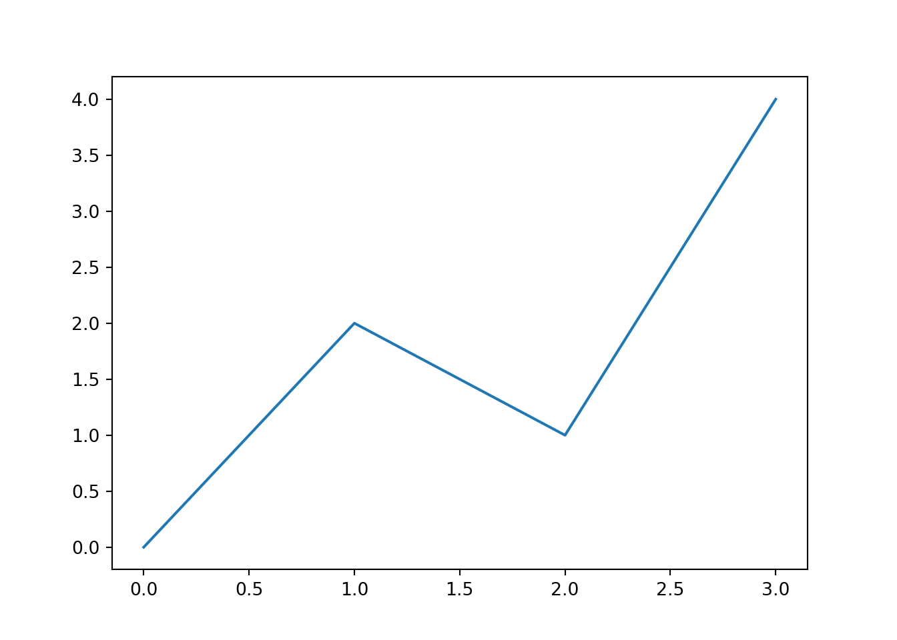

Chapter 2 Testing
- test statistic: A function of data, denoted as \[ T(X_1,X_2, \cdots , X_n ). \]
Test function \[\begin{align*} &f(x) = y. & \sin(x) &= y. \\ &g(h) = a. & \cos(t) &= \ell. \end{align*}\]
\[\begin{align*} a = b = c \tag{2.1} \end{align*}\]\[\begin{equation} \begin{split} A & = \frac{\pi r^2}{2} \\ & = \frac{1}{2} \pi r^2 \end{split} \tag{2.2} \end{equation}\]
## 3.7.4 (default, Aug 9 2019, 18:34:13) [MSC v.1915 64 bit (AMD64)]print("sssssssssssssssssssssssssssssssssssssssssssssssssssssssssssssssssssssssssssssssssssssssssssssssssssssssssssssssssssssssssssssssssssssssssssssssssssssssssssssssssssssssssssssssssssssssssssssssssssssssssssssssss")## sssssssssssssssssssssssssssssssssssssssssssssssssssssssssssssssssssssssssssssssssssssssssssssssssssssssssssssssssssssssssssssssssssssssssssssssssssssssssssssssssssssssssssssssssssssssssssssssssssssssssssssssss
## C:\Users\ChoCho\Documents\R\win-library\4.0\reticulate\python\rpytools\loader.py:24: FutureWarning: pandas.util.testing is deprecated. Use the functions in the public API at pandas.testing instead.
## level=levelimport pandas_profiling
import pandas as pd
#pd.set_option("display.max_columns", 1000) #設定最大能顯示 1000 columns
import numpy as np
from matplotlib import pyplot as plt
df_train = pd.read_csv("C:/Users/ChoCho/Desktop/!!!!!!20201212_鐵達尼_kaggle/train.csv")
df_test = pd.read_csv("C:/Users/ChoCho/Desktop/!!!!!!20201212_鐵達尼_kaggle/test.csv")
df_train.info()## <class 'pandas.core.frame.DataFrame'>
## RangeIndex: 891 entries, 0 to 890
## Data columns (total 12 columns):
## # Column Non-Null Count Dtype
## --- ------ -------------- -----
## 0 PassengerId 891 non-null int64
## 1 Survived 891 non-null int64
## 2 Pclass 891 non-null int64
## 3 Name 891 non-null object
## 4 Sex 891 non-null object
## 5 Age 714 non-null float64
## 6 SibSp 891 non-null int64
## 7 Parch 891 non-null int64
## 8 Ticket 891 non-null object
## 9 Fare 891 non-null float64
## 10 Cabin 204 non-null object
## 11 Embarked 889 non-null object
## dtypes: float64(2), int64(5), object(5)
## memory usage: 83.7+ KBWe have
Definition 2.1 asdasdasdd
- ttt
- 222
Definition 2.2 asdasdasdd
- ttt
- 222
Proof.
- TTTTTT
- If I am not mistaken, I cannot get an Rmarkdown style list to work either in the proof environment.
- Well, this is where i would like to be able to use inline code.
- we use r to compute 1+1:
r 1+1.
- If I am not mistaken, I cannot get an Rmarkdown style list to work either in the proof environment.
- Well, this is where i would like to be able to use inline code.
- we use r to compute 1+1: 2.
- Does not work.
- Just shows verbatim inline code.
asdasdasd
## 0
## 1
## 2## 0
## 1
## 2When you subset a data frame, it does not necessarily return a data frame. For example, if you subset two columns, you get a data frame, but when you try to subset one column, you get a vector:
## [1] 21.0 21.0 22.8 21.4 18.7To make sure that we always get a data frame, we have to use
the argument drop = FALSE. Now we use the chunk option
class.source = "bg-success".
## mpg
## Mazda RX4 21.0
## Mazda RX4 Wag 21.0
## Datsun 710 22.8
## Hornet 4 Drive 21.4
## Hornet Sportabout 18.7The default identifier is an-introduction but we changed
it to introduction.
## x y
## Min. : 1.00 Min. : 1.00
## 1st Qu.: 3.25 1st Qu.: 3.25
## Median : 5.50 Median : 5.50
## Mean : 5.50 Mean : 5.50
## 3rd Qu.: 7.75 3rd Qu.: 7.75
## Max. :10.00 Max. :10.00## [1] 2## [1] 0.89810692 1.51223071 0.58348803 -1.20372152 1.46538575 2.49770767
## [7] 0.37505093 0.28463388 0.07231573 -1.95570273
Figure 2.1: A figure caption.
## [1] "Hello World!"測試itemize Remember each Rmd file contains one and only one chapter, and a chapter is deRemember each Rmd file contains one and only one chapter, and a chapter is deRemember each Rmd file contains one and only one chapter, and a chapter is deRemember each Rmd file contains one and only one chapter, and a chapter is deRemember each Rmd file contains one and only one chapter, and a chapter is de
Remember each Rmd file contains one and only one chapter, and a chapter is deRemember each Rmd file contains one and only one chapter, and a chapter is deRemember each Rmd file contains one and only one chapter, and a chapter is deRemember each Rmd file contains one and only one chapter, and a chapter is deRemember each Rmd file contains one and only one chapter, and a chapter is deRemember each Rmd file contains one and only one chapter, and a chapter is deRemember each Rmd file contains one and only one chapter, and a chapter is deRemember each Rmd file contains one and only one chapter, and a chapter is de
Remember each Rmd file contains one and only one chapter, and a chapter is deRemember each Rmd file contains one and only one chapter, and a chapter is deRemember each Rmd file contains one and only one chapter, and a chapter is deRemember each Rmd file contains one and only one chapter, and a chapter is deRemember each Rmd file contains one and only one chapter, and a chapter is deRemember each Rmd file contains one and only one chapter, and a chapter is de *Remember each Rmd file contains one and only one chapter, and a chapter is deRemember each Rmd file contains one and only one chapter, and a chapter is deRemember each Rmd file contains one and only one chapter, and a chapter is deRemember each Rmd file contains one and only one chapter, and a chapter is deemember each Rmd file contains one and only one chapter, and a chapter is deRemember each Rmd file
- the first item
- the second item
- the third item
- the first item
- the second item tetas
2213
- the third item
## [1] -1.46424039 -0.62998683 -0.03771665 -0.29989578 2.11118460## [1] 7This is a sample book written in Markdown. You can use anything that Pandoc’s Markdown supports, e.g., a math equation \(a^2 + b^2 = c^2\).
The bookdown package can be installed from CRAN or Github:
install.packages("bookdown")
# or the development version
# devtools::install_github("rstudio/bookdown")Remember each Rmd file contains one and only one chapter, and a chapter is defined by the first-level heading #.
You can label chapter and section titles using {#label} after them, e.g., we can reference Chapter ??. If you do not manually label them, there will be automatic labels anyway, e.g., Chapter 4.
Figures and tables with captions will be placed in figure and table environments, respectively.

Figure 2.2: Here is a nice figure!
Reference a figure by its code chunk label with the fig: prefix, e.g., see Figure 2.2. Similarly, you can reference tables generated from knitr::kable(), e.g., see Table 2.1.
| Sepal.Length | Sepal.Width | Petal.Length | Petal.Width | Species |
|---|---|---|---|---|
| 5.1 | 3.5 | 1.4 | 0.2 | setosa |
| 4.9 | 3.0 | 1.4 | 0.2 | setosa |
| 4.7 | 3.2 | 1.3 | 0.2 | setosa |
| 4.6 | 3.1 | 1.5 | 0.2 | setosa |
| 5.0 | 3.6 | 1.4 | 0.2 | setosa |
| 5.4 | 3.9 | 1.7 | 0.4 | setosa |
| 4.6 | 3.4 | 1.4 | 0.3 | setosa |
| 5.0 | 3.4 | 1.5 | 0.2 | setosa |
| 4.4 | 2.9 | 1.4 | 0.2 | setosa |
| 4.9 | 3.1 | 1.5 | 0.1 | setosa |
| 5.4 | 3.7 | 1.5 | 0.2 | setosa |
| 4.8 | 3.4 | 1.6 | 0.2 | setosa |
| 4.8 | 3.0 | 1.4 | 0.1 | setosa |
| 4.3 | 3.0 | 1.1 | 0.1 | setosa |
| 5.8 | 4.0 | 1.2 | 0.2 | setosa |
| 5.7 | 4.4 | 1.5 | 0.4 | setosa |
| 5.4 | 3.9 | 1.3 | 0.4 | setosa |
| 5.1 | 3.5 | 1.4 | 0.3 | setosa |
| 5.7 | 3.8 | 1.7 | 0.3 | setosa |
| 5.1 | 3.8 | 1.5 | 0.3 | setosa |
You can write citations, too. For example, we are using the bookdown package (Xie 2020) in this sample book, which was built on top of R Markdown and knitr (Xie 2015).
References
Xie, Yihui. 2015. Dynamic Documents with R and Knitr. 2nd ed. Boca Raton, Florida: Chapman; Hall/CRC. http://yihui.org/knitr/.
Xie, Yihui. 2020. Bookdown: Authoring Books and Technical Documents with R Markdown. https://github.com/rstudio/bookdown.